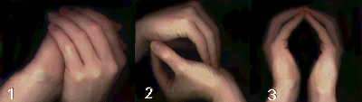
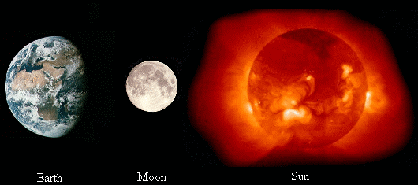

by Peebrain
This article is the most complete/detailed description of the method I use to create psi balls. I tried to write this article for a 3 year old so no one would be confused. Forgive me for being redundant and stupid in many parts, but I just wanted to make sure I covered everything  . Also, it's written for beginners - I'm not gonna tell you how to throw or add information to them. Here it is, a complete, step-by-step procedure, for making psi balls.
. Also, it's written for beginners - I'm not gonna tell you how to throw or add information to them. Here it is, a complete, step-by-step procedure, for making psi balls.
Step 1
Decide where to make the psi ball
Before you make the psi ball, you have to decide where to make it. You can make it anywhere you want. You can make it in your hands, at your third eye, across the room, or in china!
|  |
Step 2
Decide your source of energy
Most people use energy from somewhere else to make a psi ball. You can use your energy, but you will run out faster and get tired. You can use anything as your source of energy. For example, you can use the Earth, the Sun, the Moon, or you can use people or objects. Usually planets/stars/moons are a good choice
because they have a lot of energy.
|  |
Step 3
Start drawing energy from your source
Drawing energy from your source is easy. All you have to do is visualize energy coming from your source and entering or surrounding your body. Visualizing is just like imagining or pretending, just picture it in your head. You can visualize anything you want, as long as it seems like your absorbing energy from
the source. Some people close their eyes, some don't - do both and see what works for you. For example, I visualize myself standing on the Earth with energy coming from the core, through the ground, and into my body through my feet.
Step 4
Direct the energy inside your body to the location you're making the psi ball
Now, while still drawing energy from your source, direct the energy to where you're making the psi ball. Once it gets to the location, visualize the energy swirling around in the shape of a ball. For example, I visualize the energy twisting around my arms and swirling around in my hands.
Step 5
Adding more energy to the psi ball
To add energy, you just keep visualizing the energy entering the psi ball. There are two ways though... one, you could make the psi ball get bigger then compress it down, or two, you can make the psi ball denser and leave the size the same. If you're going to make the psi ball bigger, I suggest moving your hands
apart then bring them closer together when you compress the ball. Note - you are not compressing the psi ball with your hands, you have to visualize it. Here is an example:
Step 6
Letting your psi ball go... *sniff*
Well, when it's time to get rid of the psi ball, all you have to do is let it go. That's it. Hopefully you haven't grown too attached to it  ... So, when it's time, release your hold and let the energy filter into the air. Just let it diffuse... and that's it!
... So, when it's time, release your hold and let the energy filter into the air. Just let it diffuse... and that's it!
Conclusion
Well, you made it. Congratulations! See, it's not that tough... this is easy stuff. If you have questions, I suggest looking at my "Questions and Answers" article in the Manipulation category because I answered A LOT of questions there. Right now I'm gonna take a break, maybe in the near future I'll write an
article of how to throw them and how to change their color or something... OR maybe one of you will write it for me  ! Anyways... good luck and KEEP PRACTICING!!!
! Anyways... good luck and KEEP PRACTICING!!!
~Sean (aka Peebrain)
Last Modified on May 14 2002
All Content, Images, Video, Text, and Software is © Copyright 2000-2006 PsiPog.net and their respective authors. All Rights Reserved.
You must agree to the Terms of Service and Privacy Policy to view this website. Click here to contact the webmaster.